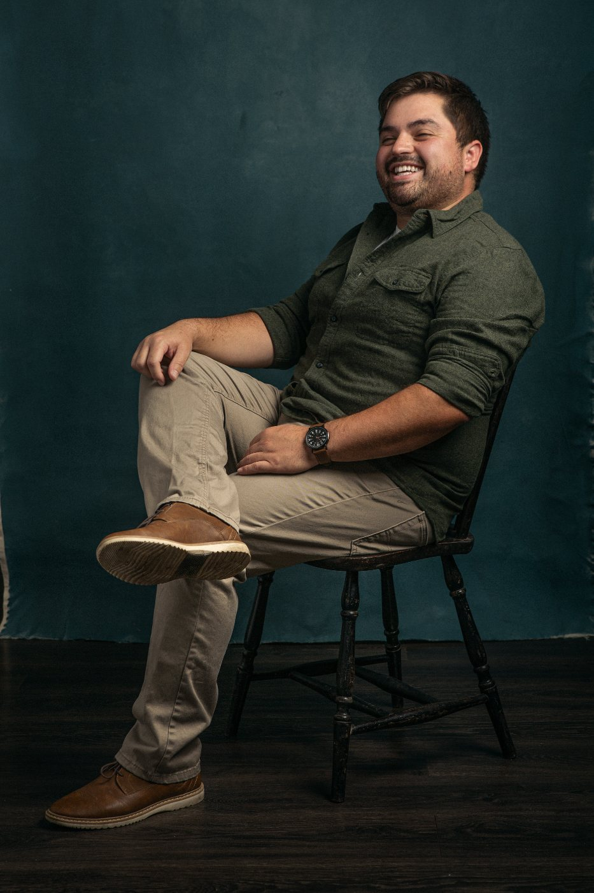
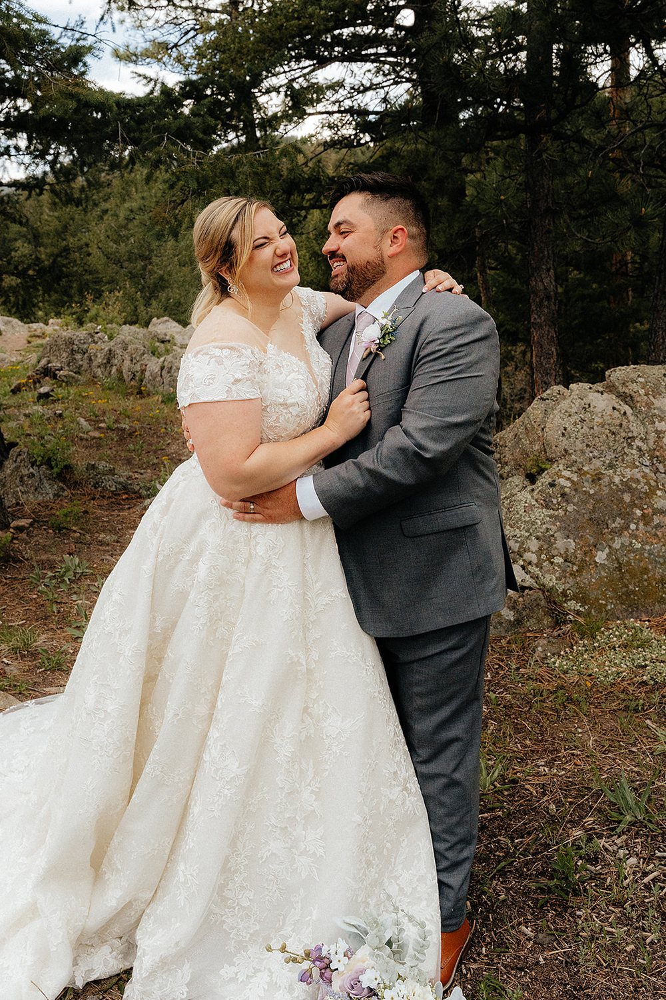
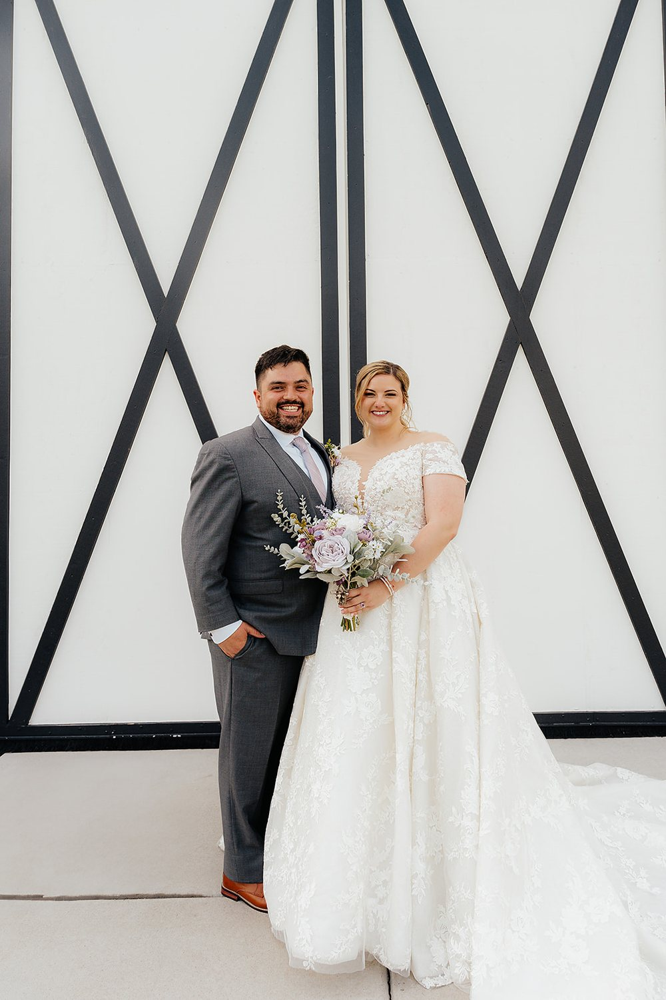
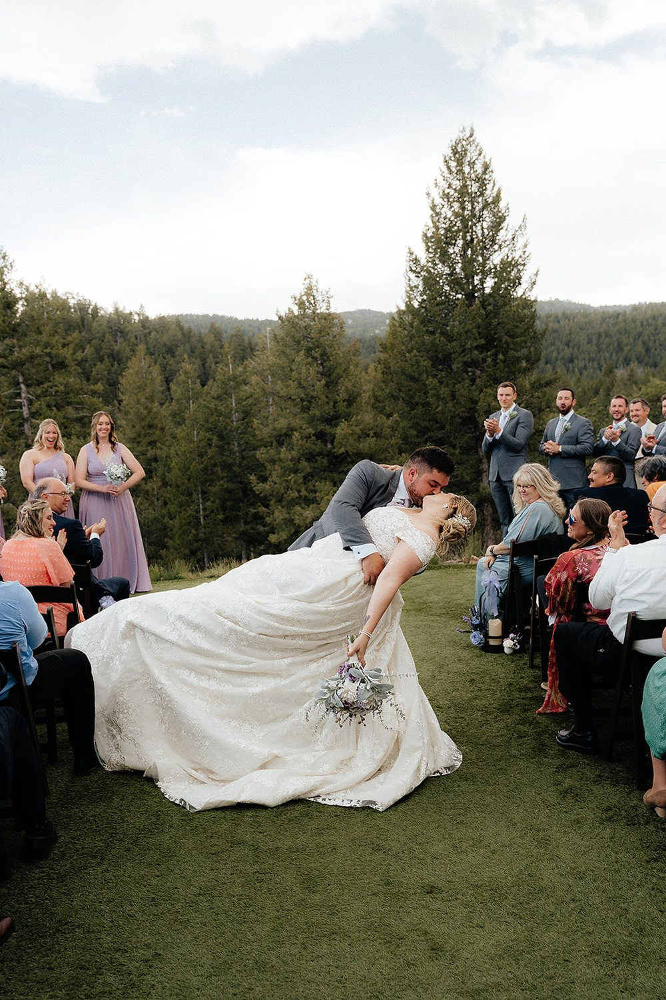

Nice to meet you
I believe every moment is worth capturing — no matter where it happens.
I’m a Denver-based photographer who tells stories through a lens, and I’ll travel just about anywhere to do it. One weekend it’s a wedding high in the Rockies; the next it’s a cozy family session in the middle of the city. I photograph weddings, engagements, families, and senior portraits, and I’m just as happy documenting a celebration or an everyday joy worth remembering.
I keep things easy-going and fun, so you can relax and just be yourselves. While you’re laughing, I’m hunting for the unexpected angle or the slightly-wild idea that makes your photos look like you — and nobody else. They’re photos you’ll cherish forever.
I’m also the guy everyone turns to when it’s time to take a photo at an event. They say it with a sly grin, “Oh, he’s the professional, he’ll make it look good,” and honestly, I love it.
Me & Jen
I know what it’s like to be on the other side of the camera, too.
In 2024 I married my amazing, beautiful bride, Jen. The whole day felt like a blur, but it also felt like it was in slow motion. I’m so grateful we had an amazing person to capture our big day.
After so many weekends behind the camera, it was a strange and wonderful thing to be the one in front of it. It gave me a new appreciation for what my couples feel on their own wedding day: the nerves, the joy, and the hope that someone will hold onto all of it for them. I carry that with me to every wedding I photograph.
Since then, we’ve been enjoying life together. Jen and I love to travel, and most of our favorite days are the simple ones: a weekend away somewhere new, a coffee shop we haven’t tried yet, or an evening at the local brewery playing cards and trying new places.



What it’s all for
Everything I have, I owe to God, from every family session to every “I do.” He’s the reason I love what I do, and He has blessed me beyond measure with amazing clients I get to photograph every day. The standard I try to hold myself to comes straight from Scripture: “Whatever you do, work heartily, as for the Lord and not for men” (Colossians 3:23 ESV).
Weddings get more meaningful every time I capture one. Each one reminds me how much the Lord is working in my life, and what a gift it is to be a small part of so many people’s stories. My hope is just what Matthew 5:16 says: “…let your light shine before others, so that they may see your good works and give glory to your Father who is in heaven” (ESV).
Scripture quotations are from the ESV® Bible (The Holy Bible, English Standard Version®), © 2001 by Crossway, a publishing ministry of Good News Publishers. Used by permission. All rights reserved.